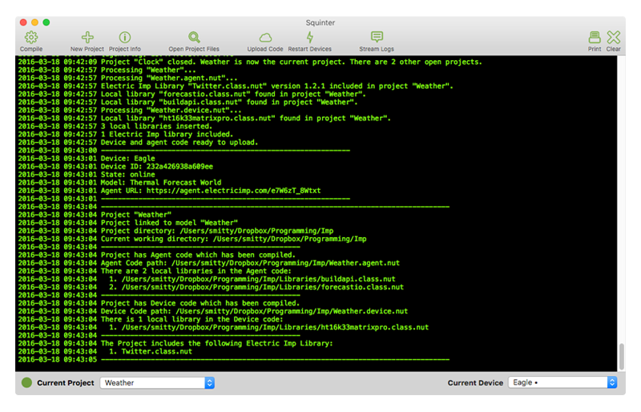

Squinter 2.0“A Squirrel Integrator”
Contents |
Introduction
Squinter is a utility to help you work on Electric Imp software development projects using your own editor and code files you keep in a local folder — which may also be sync’d with a cloud service like Dropbox or a version control system like GitHub.

Squinter 2.0 makes use of the impCentral API, which will replace the Build API on which Squinter 1.0 was built. With Squinter 2.0 and the impCentral API you can:
- Work on your Electric Imp project code in your favourite text editor
- ‘Compile’ in local library files and separate Squirrel files before uploading the complete code to the Electric Imp impCloud™
- You can take charge of your devices:
- Deploy application firmware to them (via device groups)
- Update their code
- Reboot devices to run newly uploaded code
- View device logs, both historical and live streamed
- And much more...
Important
Squinter 2.0 is being made available in a pre-release Beta version which is not feature-complete and may contain code errors that may impact your own code. Do not use Squinter 2.0 with commercially sensitive code.